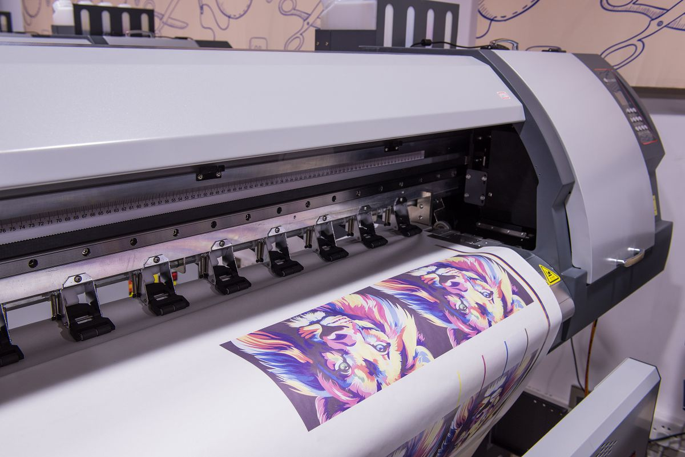

Štamparija · Višnjička 6, Beograd
Vaše ideje sprovodimo u delo.
Sito, tampon, ofset štampa, blindruk i zlatotisak. Štampamo i na keramici, porcelanu i staklu, od 1989. godine.

Sito štampa
Na papiru, tekstilu, plastici i drugim materijalima.
Tampon štampa
Na neravnim predmetima: olovke, upaljači, privesci.
Blindruk i zlatotisak
Suvi žig i zlatotisak za posebne proizvode.
Ofset štampa
Za veće tiraže.
Keramika, porcelan, staklo
Štampa na šoljama, tanjirima i staklu.
Digitalna i veliki formati
Digitalna i solventna štampa, u saradnji sa kooperantima.
Od 1989.
Štamparija GrafoTin nastala je 1989. godine pod imenom TinŠtampa, a od 2000. godine posluje kao GrafoTin.
Naša pričaIz naše radnje
Tehnike i materijali


Kako radimo
Od upita do gotovog tiraža
- 1
Pošaljete upit
Napišite šta vam treba, tiraž i rok, na grafotin@gmail.com.
- 2
Dobijete ponudu
Javimo cenu, papir i rok izrade.
- 3
Štampamo
Gotov materijal preuzimate ili vam ga dostavimo.
Zašto mi
Zašto nas biraju
Kvalitet
Visokokvalitetni materijali i dugogodišnje iskustvo.
Garancija
Puna podrška i nakon realizovanog posla.
Poštovanje rokova
Uvek poštujemo dogovorene rokove.
Fleksibilnost
Moguć je svaki dogovor u obimu i dinamici posla.
Pitanja
Česta pitanja
Kako da dobijem ponudu?
Pošaljite upit na grafotin@gmail.com: šta štampate, tiraž, format i rok. Javljamo cenu i rok izrade.
U kom formatu da pošaljem fajl?
Najbolje PDF sa tekstom pretvorenim u krive i 3 mm za sečenje sa svake strane. Ako niste sigurni, pošaljite šta imate pa ćemo proveriti.
Gde se nalazite?
Višnjička 6, Beograd
Kontakt
Gde se nalazimo
Imate posao za štampu?
Pošaljite upit i dobijate ponudu sa cenom i rokom.